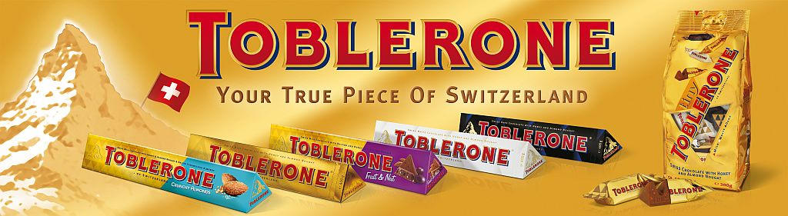

Remedios es un municipio de Colombia ubicado en el Nordeste de Antioquia el cual aparentemente es un municipio pacífico y lleno de alegría y prosperidad. Sin embargo, este caso la situación es mucho más complicada. En Remedios se pueden encontrar los mejores minerales de todo el país, y por ello es que las principales compañías mineras internacionales tienen sus ojos puestos sobre esta. Inicialmente, parece una idea positiva el que hayan compañías extranjeras invirtiendo en nuestro país. Sin embargo, no todo es color de rosa. Remedios al ser un punto de explotación minera, hace que se incrementen los riesgos y las amenazas por parte de diversas organizaciones criminales (F.A.R.C, Paramilitares, E.L.N, entre otros) siempre están presentes. Según diversos testimonios de los habitantes de Remedios, las condiciones de vida son muy complejas por varias razones. La primera, es la escasez de alimentos que hay en el pueblo. Como las principales rutas por las que se transitan los alimentos y también los habitantes están dominadas por los ya mencionados criminales. Cuando algún habitante desea movilizarse por estas rutas, debe pegar algún tipo de tributo a los jefes paramilitares, por ejemplo o a los jefes de las F.A.R.C que rondan esos lugares. La segunda razón que hace que Remedios deje de brillar son las empresas internacionales mineras que contratan a los habitantes del poblado. Como no tienen ninguna intención de apoyarlos ni económicamente o con algún otro tipo de ayuda. Por eso, los habitantes están indignados por la poca ayuda que están recibiendo del estado y asimismo, de las entidades internacionales. Según Hugo Vildades, campesino de Remedios, la violencia siempre está presente en el pueblo, y es muy seguro que no cese hasta que nos quedemos sin un gramo de oro. Al poder observar esta situación, se ve con claridad la falta de iniciativa que tiene el gobierno, y también la poca humanidad que poseen estas grandes empresas que solo quieren nuestra materia prima, para luego vender en el exterior, o para elaborar algún producto supremamente caro que de ninguna manera va a ayudar en el desarrollo Colombiano ni mucho menos en el de Remedios.
PARA MÁS INFORMACIÓN ACERCA DE ESTE TEMA, VISITE LAS SIGUIENTES PÁGINAS...
